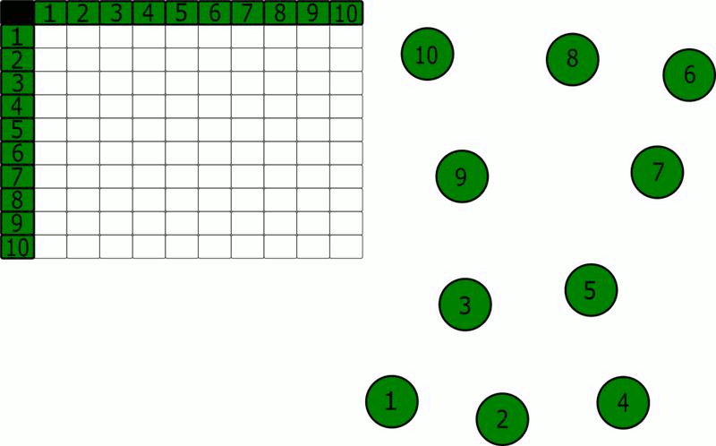

Wstęp
Algorytm Floyda-Warshalla służy do wyliczenie najkrótszej ścieżki w grafie.
Przy czym poszczególne wagi krawędzi mogą być ujemne, jednak suma wag(ścieżka) nie może być ujemna.
Oblicza rekurencyjnie sumę wszystkich ścieżek.
Często przedstawia się to w formie tablicy.
Gdzie indeksy tablicy oznaczają poszczególne połączenia między elementami.

Opis tablicy
Jak widzimy graf który stworzymy będzie miał połączenie objektu 4 z 3.
W tym konkretnym grafie(nieskierowanym) połączenie będzie dwustronne co oznacza że 3 i 4 są połączone jak i 4 z 3.
W skierowanym graf należy dać strzałki z obu stron, aby był on dwustronny.
Dodatkwo widzimy również jaka jest waga połączenia, czyli 4.
Poniżej zaprezentowano przykład już całego grafu. Czy już wiesz jak czytać taką tabelę?
Pseudokod algorytmu Floyda-Warshalla
n = no of vertices
A = matrix of dimension n*n
for k = 1 to n
for i = 1 to n
for j = 1 to n
Ak[i, j] =
min (
Ak-1[i, j],
Ak-1[i, k] + Ak-1[k, j]
)
return A
Zobaczmy zatem, w jaki sposób będzie on działał dla danego grafu dla przypadku path(1,5)
https://www.programiz.com/dsa/floyd-warshall-algorithm